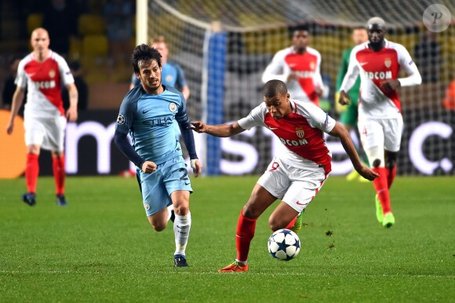
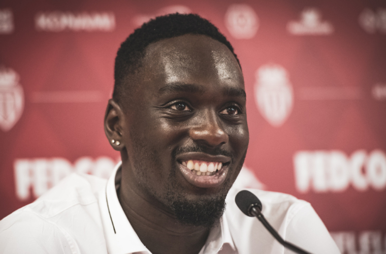

Người quay phim của AS Monaco TV đang chờ để bắt được những cảm xúc đầu tiên của Kylian. Nhưng chỗ mà anh ta đang đứng không phải là trước lối đi dẫn vào phòng thay đồ của sân Stade Louis II mà là hành lang của trung tâm khảo thí quốc gia, nơi tiền đạo trẻ người Pháp vừa mới hoàn thành phần đầu tiên của kỳ thi baccalauréat (tốt nghiệp trung học) năm 2016. Trong trang phục thường ngày, vai đeo ba lô đen, trông viên ngọc mới của Monaco chẳng khác gì một thiếu niên bình thường. Nhưng so với những học sinh trung học 17 tuổi khác, anh rõ ràng có nhiều kinh nghiệm đứng trước ống kính máy quay hơn, nên tỏ ra rất thoải mái khi trả lời câu hỏi về môn thi mà anh vừa trải qua ba tiếng làm bài. Triết học không phải là môn quan trọng trong hệ thống các môn thuộc ban Khoa học và Công nghệ Quản lý (STMG), nhưng Kylian vẫn quyết định chọn môn này. “Tôi chọn câu hỏi thứ hai: ‘Chúng ta có thể minh giải cho những đức tin của mình hay không?’ Nó có liên quan tới bóng đá, mà bóng đá là thứ mà tôi nắm rõ nhất,” anh vừa trả lời người phóng viên vừa cười.
“Có thể hiện thực hóa những giấc mơ của chúng ta không?” chắc chắn sẽ là một câu hỏi phù hợp hơn, sau tất cả những sự kiện đã làm thay đổi cuộc đời của cậu bé tới từ Bondy vào cuối mùa giải 2015-16.
Ba tuần trước đó, Kylian đã nhận được thứ được xem như Chén thánh đối với mọi cầu thủ ở học viện. Cùng với các cầu thủ thuộc thế hệ 1997 và 1998, anh đã giành Coupe Gambardella sau trận chung kết diễn ra trên sân Stade France ở vùng ngoại ô Saint-Denis vào ngày 21/5. Trận chung kết ấy cũng là sự kiện đánh dấu việc Kylian vươn lên một tầm cao mới.
Với vị trí của Kylian lúc đó, không có gì ngạc nhiên khi anh được miễn, không phải tham gia một số vòng đầu tiên của giải đấu dành cho độ tuổi U-19. Trong khi các bạn chiến đấu và vượt qua những Rodez, Clermont-Ferrand, Metz và Caen, anh tiếp tục tích lũy kinh nghiệm với đội Một. Vào tháng Ba, anh có lần đá chính thứ hai ở Ligue 1 trong chiến thắng 2-0 trước PSG ngay tại Parc des Princes, trước khi đánh dấu trận thứ 14 cùng bóng đá chuyên nghiệp với một pha kiến tạo trong trận đấu với Lille vào ngày 10/4.
“Anh ấy trở lại đội từ vòng bán kết, và chúng tôi biết rằng sức mạnh của đội đã tăng lên đáng kể,” bạn thân của Kylian ở trung tâm huấn luyện Irwin Cardona, người có kiểu tóc vàng rất sành điệu, nhớ lại. “Dù anh ấy đã có những bước tiến rất dài, chúng tôi vẫn rất thân thiết. Chúng tôi gọi cho nhau suốt. Các cầu thủ trong đội cũng biết rằng Kylian sẽ không đổi tính, ngay cả khi anh ấy đã có được một vị thế khác sau 10 trận với đội chuyên nghiệp. Chúng tôi đều biết là anh ấy sẽ vẫn làm tất cả vì bạn bè.”

.Đúng như dự đoán, AS Monaco đã đánh bại Stade Brestois trong trận bán kết diễn ra vào ngày 23/4 ở Libourne, một thành phố nằm ở tây nam nước Pháp. Nhưng đó không phải là một chiến thắng dễ dàng. Kylian thì gặp một số vấn đề với cách di chuyển và chọn vị trí khi xin bóng trong thời gian đầu trận. Thực ra thì đó là điều bình thường, nếu biết rằng anh không có cơ hội tập buổi nào với các đồng đội từ khi trở lại. “Ngày trước trận đấu, anh ấy vẫn còn tập luyện với các cầu thủ chuyên nghiệp. Tới buổi chiều thì anh mới được thông báo là mình sẽ được sung vào biên chế của đội U-19 dự Coupe Gambardella,” Fabien Pigalle, phóng viên chịu trách nhiệm đưa tin về đội U-19 trên tờ Monaco-Matin, nhớ lại. Sự xuất hiện của Kylian ở Libourne rõ ràng không phải là tin tốt cho đội bóng tới từ Brest. “Các cầu thủ của tôi sợ hết hồn khi nghe nhắc tới tên của Kylian, chúng tôi không hề chuẩn bị phương án riêng để đối phó với anh ta trong các buổi tập trước trận,” huấn luyện viên của đối thủ Éric Assadourian thú nhận. “Vào trận, anh ta là người nổi bật nhất, và khiến chúng tôi gặp rất nhiều khó khăn. Chúng tôi biết mình đang phải đối đầu với cầu thủ lớn trong tương lai.”
Ngay trước giờ nghỉ, Kylian tận dụng thành công một trong những cơ hội của mình để ghi bàn mở tỉ số với một cú sút chéo góc.
Đối tác trên hàng công của anh, Irvin Cardona, ghi thêm một bàn nữa trong hiệp 2 để đảm bảo cho AS Monaco một chỗ trong trận chung kết.
“Chúng tôi sẽ được đến Stade de France! Tôi tới từ Paris nên được chơi bóng ở đó có ý nghĩa đặc biệt với tôi. Tôi từng tới đó xem đội tuyển Pháp, và cũng từng xem nhiều trận chung kết Gambardella ở đó,” ngôi sao của thế hệ 1998 hồ hởi nói sau khi trận đấu kết thúc. “Chỉ còn một trận nữa. Trận chung kết. Và như người ta nói, trận chung kết không phải để chơi, mà là để chiến thắng!”
Một tháng sau đó, Kylian chứng minh anh không nói cho sang mồm. Anh chính là kiến trúc sư trưởng trong việc giành chức vô địch Coupe Gambardella thứ tư trong lịch sử Monaco. Trong suốt 90 phút của trận đấu với Racing Club de Lens, anh đơn giản là không thể bị ngăn chặn. “Chúng tôi đã có cơ hội được xem rất nhiều tài năng chơi bóng trong một trận chung kết Gambardella... Nhưng ngay cả Benzema và Ben Arfa cũng chưa bao giờ có thể tỏ ra quá vượt trội so với những cầu thủ còn lại theo cách mà Kylian đã làm,” một thành viên của Liên đoàn bóng đá Pháp cho biết. “Sự kỳ vọng dành cho các cầu thủ trẻ xuất sắc trong những trận chung kết luôn là rất cao. Nên thường thì những cầu thủ ấy sẽ bị ngợp và không thể hiện được hết khả năng của mình. Nhưng với Mbappé lại khác. Cậu ta thực sự như đến từ một hành tinh khác!”
Trước khi trận đấu diễn ra, Kylian đồng ý trả lời phỏng vấn của phóng viên kỳ cựu Daniel Auclair, người có trách nhiệm tìm hiểu cảm xúc của cầu thủ hai đội trước khi họ bước ra mặt cỏ của Stade de France. Những màn hỏi đáp này được phát trực tiếp trên truyền hình. Kylian xuất hiện với vẻ thoải mái và đầy tự tin. “Một sự cố hiếm gặp trên truyền hình đã xảy ra,” Damien Chedeville, người điều hành blog Fast Foot, vừa nói vừa cười. “Vị phóng viên già của France Télévisionđã khiến mọi việc rối tinh lên khi nhầm Kylian với đội trưởng của Racing Club de Lens, Taylor Moore. Một tình huống tương tự như thế có thể khiến nhiều cầu thủ trẻ bị mất tinh thần. Nhưng Kylian thì vẫn như không. Anh nhẹ nhàng đính chính lại thông tin với người phóng viên già, trước khi đưa ra một câu trả lời rõ ràng và chính xác. Tình huống đó ít nhiều cho thấy bản lĩnh của Kylian, và cả sự thông minh của anh. Kylian đã quá ‘cứng’ so với tuổi.”
Trên sân, Kylian cũng thể hiện anh không còn là một cầu thủ thuộc đội trẻ nữa. Trong sắc áo đỏ-trắng quen thuộc của AS Monaco, anh tỏ ra rất thoải mái. Đội bóng tới từ Lens không cách gì có thể ngăn anh được. Phút 29, tận dụng tình huống người theo kèm bị trượt chân, Kylian xộc thẳng từ cánh trái vào trung lộ, quan sát một nhịp rồi tung ra một đường chuyền sắc như dao cạo cắt vào giữa hai trung vệ của đối phương cho bạn thân Irvin Cardona, người kết thúc pha bóng với một cú xỉa bóng bằng chân trái xuất sắc. Bàn mở tỉ số không chỉ cho thấy tài năng mà còn cả sự ăn ý giữa hai tiền đạo của Monaco. “Đúng là với Kylian, mọi thứ thường trở nên dễ dàng hơn rất nhiều,” Cardona, người được Monaco cho đội bóng hạng nhất Bỉ Cercle Brugge mượn trong mùa giải 2017-18, thừa nhận. “Tôi không biết là liệu tôi còn cơ hội chơi bóng với anh ấy một lần nữa hay không. Nhưng anh ấy có lẽ là người mà tôi hiểu và hiểu tôi nhất trên sân.”
Sang hiệp 2, Irvin Cardona sẽ có vinh dự được “ngồi ở hàng ghế đầu” trong show diễn riêng của người đồng đội mang áo số 10. Phút 47, Kylian kết thúc gọn ghẽ bằng chân phải một pha phối hợp tam giác đẹp mắt giữa anh với Cardona và Guévin Tormin. Tới phút 92 thì Kylian chẳng cần ai hỗ trợ mà một mình vượt qua bốn cầu thủ của Lens, những người đã tỏ vẻ buông xuôi, trước khi tung ra một cú sút căng đưa bóng dội cột vào lưới. Đó là bàn thắng thứ ba và cũng là cuối cùng của trận đấu. Lần đầu tiên trong sự nghiệp, Kylian ghi được một cú đúp trên sân Stade de France.
Kylian không giấu được cảm giác hạnh phúc sau khi nâng cúp và nhận huy chương: “Không thể nào so sánh cảm xúc của tôi lúc này với lúc tôi ghi bàn thắng đầu tiên ở Ligue 1 được. Cả hai đều rất tuyệt. Nhưng lần đó chẳng có cái cúp nào. Lần này thì có.”
Đêm hôm đó, cả đội ăn mừng tưng bừng ở Paris. “Kylian đã xác lập được một vị thế riêng trong lứa cầu thủ cùng thế hệ,” một thành viên của đội bóng chia sẻ. “Người ta không đối xử với cậu ta như với một hoàng tử, nhưng cậu ta đúng là được hưởng một số đặc quyền. Theo kế hoạch thì đội bóng sẽ tổ chức ăn mừng trong một nhà hàng đồng thời là hộp đêm. Nhưng Kylian không đến nhà hàng ngay mà về nhà với bố mẹ trước. Khi cậu ta xuất hiện thì không khí lập tức khác hẳn. Phần lớn các cầu thủ chưa được ra ngoài nhiều nên đều tỏ ra ngượng ngùng, bối rối. Nhưng Kylian thì khác. Cậu ta đặc biệt tự tin. Nhất là ở khoản bắt chuyện với các cô gái. Cũng giống như ở trên sân thôi. Cậu ta tạo cho người khác cảm giác mình là người rất tự tin và luôn cảm thấy thoải mái một cách tự nhiên trong mọi chuyện.”
Với phần lớn các thành viên của thế hệ được xem là thế hệ vàng của AS Monaco này, thì đêm đó chính là đêm mà họ chạm tới đỉnh cao, nghĩa là sau đó, tất cả xứng đáng với một kỳ nghỉ thú vị. Tất cả, trừ Kylian, người không bao giờ làm điều mà những người khác đều làm.
Không phải tất cả đều là màu hồng. Nửa sau kỳ diệu của mùa giải 2015-16 còn được đánh dấu bằng một sự hiểu lầm với Liên đoàn bóng đá Pháp, thực ra đã bắt đầu từ gần ba năm trước đó. Kylian không ra sân trận nào trong màu áo đội U-16 Pháp trong năm 2013, chỉ chơi hai trận cho đội U-17 trong tháng 9/2014 với cùng đối thủ Ukraine, và sau đó không có thêm trận nào cho tới tận tháng 1/2016, khi anh được triệu tập chuẩn bị cho giải Copa del Atlántico ở Tây Ban Nha. Giải đó, rất tiếc anh lại không thể góp mặt vì một chấn thương hiếm gặp (xoắn thừng tinh hoàn). Làm thế nào mà huấn luyện viên đội trẻ Jean-Claude Giuntini lại có thể bỏ quên cầu thủ xuất sắc nhất trong thế hệ của anh ta được nhỉ? Ông Giuntini từ chối đi vào chi tiết, nhưng nhiều người cho rằng họ biết lý do thực sự: “Giuntini cảm thấy không ưa nổi tính cách của Kylian. Thực ra thì ông không phải là người đầu tiên. Jean-Claude Lafargue ở INF Clairefontaine và sau đó là Bruno Irlès ở Monaco đều diễn giải sự tự tin và phong cách tự nhiên của anh là những biểu hiện của thói tự cao. Nhưng dù có phải là biểu hiện của tự cao hay không, thì sự tự tin như Kylian đã thể hiện là điều mà mọi cầu thủ cần phải có để có thể vươn tới trình độ cao nhất. Cứ nhìn Zlatan Ibrahimovic´ và Cristiano Ronaldo mà xem!”
“Trong thời gian còn huấn luyện Kylian, vào năm 2013, tôi từng có một cuộc trao đổi bằng điện thoại với Giuntini để nắm tình hình về các cầu thủ của mình ở đợt tập huấn trước khi chốt danh sách đội U-16 Pháp. Rõ ràng là Kylian đã thể hiện chưa đủ ấn tượng để có thể được gọi lại,” Bruno Irlès xác nhận. “Anh cũng phải đặt câu chuyện trong bối cảnh bóng đá Pháp vẫn đang trong giai đoạn chịu sang chấn sau thảm họa World Cup 2010 ở Nam Phi. Khi vụ scandal trên đồi Knysna xảy ra, các huấn luyện viên bắt đầu tự đặt ra cho mình các câu hỏi, và rồi quyết định tài năng không phải là tất cả. Cần phải xem xét cả thái độ của các cầu thủ, và khả năng hòa hợp của họ trong đội bóng nữa.”
Kết quả là Kylian không có cơ hội dự vòng chung kết U-17 châu Âu được tổ chức vào năm 2015 ở Bulgaria, giải đấu mà U-17 Pháp đã đăng quang sau chiến thắng 4-1 trong trận chung kết với đội tuyển U-17 Đức. Không có Kylian, Odsonne Édouard là tiền đạo chủ lực của Pháp ở giải đấu đó. Cầu thủ thuộc biên chế Paris Saint-Germain đã ghi được 8 bàn tại giải, trong đó có một hat-trick ở trận chung kết. “Nếu có anh ấy thì đội còn mạnh nữa. Chúng tôi có một số cầu thủ giỏi ở vị trí tiền đạo, nhưng vẫn thấy ngạc nhiên khi anh ấy không được chọn,” đội trưởng của thế hệ 1998, Timothé Cognat thừa nhận. “Nhưng chúng tôi còn ngạc nhiên hơn khi biết rằng anh ấy được chơi vượt tuổi, cho đội U-19 Pháp.”
Là kẻ không được chào đón ở thế hệ 1998 do huấn luyện viên Jean-Claude Giuntini dẫn dắt, Kylian rốt cuộc lại tìm thấy cơ hội thể hiện mình ở sân chơi quốc tế với những người đàn anh thuộc lứa 1997. Trong nỗ lực tìm người thay thế cho Ousmane Dembélé, huấn luyện viên đội tuyển U-19 Pháp, Ludovic Batelli, quyết định bỏ qua mọi lời ong tiếng ve và vào tháng 3/2016, triệu tập Kylian cho trận đấu cuối cùng của vòng loại U-19 châu Âu. Hóa ra đó là một ý tưởng tuyệt vời. Kylian nhanh chóng giành được tình cảm của những đồng đội lớn tuổi hơn trong đội, và trên sân, anh cũng nhanh chóng trở thành một nhân tố không thể thay thế. Sau lần đá chính đầu tiên, trong trận đấu với Montenegro vào ngày 24/3, Kylian bắt đầu ghi dấu ấn. Anh là sự khác biệt trong cả hai trận vòng loại cuối cùng: mở tỉ số từ một quả phạt góc trong chiến thắng đậm đà 4-0 trước Đan Mạch vào ngày 26/3, trước khi ghi bàn thắng duy nhất trong trận đấu với Serbia ba ngày sau đó. Đó là chiến thắng quyết định tấm vé dự vòng chung kết của đội U-19 Pháp. “Trẻ hơn gần 2 tuổi so với các cầu thủ còn lại, nhưng Kylian đã thể hiện một phong thái chững chạc đáng ngạc nhiên,” huấn luyện viên Ludovic Batelli nhớ lại. “Cậu ấy hòa nhập rất nhanh, không phải với tư cách cầu thủ trẻ nhất trong đội, mà với tư cách một cầu thủ lớn, một thành viên tuyệt vời của phòng thay đồ.”
Đội trưởng của thế hệ 1997, Lucas Tousart, hoàn toàn đồng tình với những nhận định của ông thầy: “Dù vẫn còn ít tuổi, nhưng cậu ấy bắt nhịp rất nhanh. Quá trình hòa nhập của cậu ấy diễn ra gần như ngay tức thì, và chúng tôi sớm nhận ra rằng cậu ấy có thể làm được rất nhiều điều trong những trận đấu sắp tới.” Không chỉ là “những trận đấu sắp tới”, Kylian còn mang tới rất nhiều niềm vui cho những đàn anh trong đội nói riêng và những người Pháp nói chung trong suốt thời gian diễn ra vòng chung kết U-19 châu Âu, được tổ chức ở Đức từ 12 đến 24/7. “Chúng tôi đã được chứng kiến không ít điều khó tin từ đôi chân của anh ấy. Như khi anh ấy loại bỏ đối thủ chỉ bằng một cái lắc người đơn giản. Hay khi anh ấy ngả người móc bóng sau một cú gẩy chân điệu nghệ. Kylian đã thể hiện một phong độ cực kỳ ấn tượng xuyên suốt cả giải đấu,” phóng viên Damien Chedeville nhớ lại. “Anh ấy là nhân tố quyết định trong các trận đấu ở vòng bảng, với một bàn thắng khó tin trong trận đấu với Croatia và hai bàn quan trọng khác trong chiến thắng 5-1 trước Hà Lan.” Kylian tiếp tục mang theo phong độ ấn tượng của mình vào trận bán kết với Bồ Đào Nha diễn ra ở Mannheim vào ngày 21/7. Sau một pha dốc bóng mạnh mẽ bên cánh trái của Kylian, Ludovic Blas được đặt trước một cơ hội không thể bỏ lỡ để ghi bàn gỡ hòa cho Pháp. (Trước đó, Pacheco đã mở tỉ số cho Bồ Đào Nha từ rất sớm). Trong hiệp 2, Kylian tự mình ghi thêm 2 bàn, vào các phút 67 và 75, để ấn định chiến thắng 3-1 cho “Bleuets”. “Đó là trận đấu mà một lần nữa Kylian cho những kẻ vẫn còn đang nghi ngờ anh thấy tiềm năng phát triển của anh là không có giới hạn,” phóng viên Fabien Pigalle của tờ Monaco-Matin nhận xét. Vào ngày 24/7, Pháp đăng quang chức vô địch U-19 châu Âu sau khi vùi dập Italia 4-0 trong trận chung kết. Những người ghi bàn cho Pháp là Issa Diop, Lucas Tousart, Ludovic Blas và Jean-Kévin Augustin. Augustin cũng chính là chủ nhân của danh hiệu Chiếc giày vàng.

.Jean-Kévin Augustin.
Việc không có tên trên bảng điện tử ở trận chung kết không hề làm cho mùa giải 2015-16 của Kylian bớt lung linh. Anh đã có đủ những gì cần có. Những kỷ lục mới. Bản hợp đồng chuyên nghiệp đầu tiên. Chức vô địch Coupe Gambardella và U-19 châu Âu. Dường như tất cả những gì anh chạm vào đều biến thành vàng! Đúng hơn là gần như tất cả... Kylian đã phải chờ tới tháng 9 mới vượt qua được kỳ thi tốt nghiệp STMG sau khi thiếu 19 điểm so với điểm chuẩn ở lần thi đầu tiên. Một bằng chứng cho thấy ngay cả Kylian cũng không thể “một phát ăn ngay”!